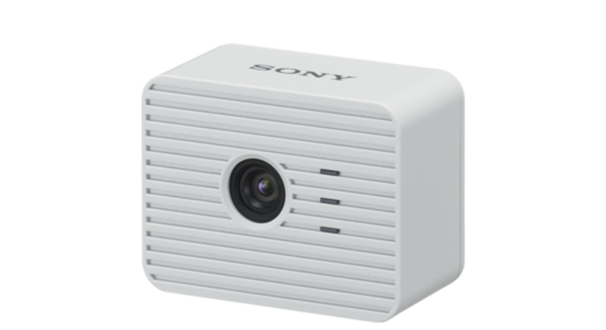
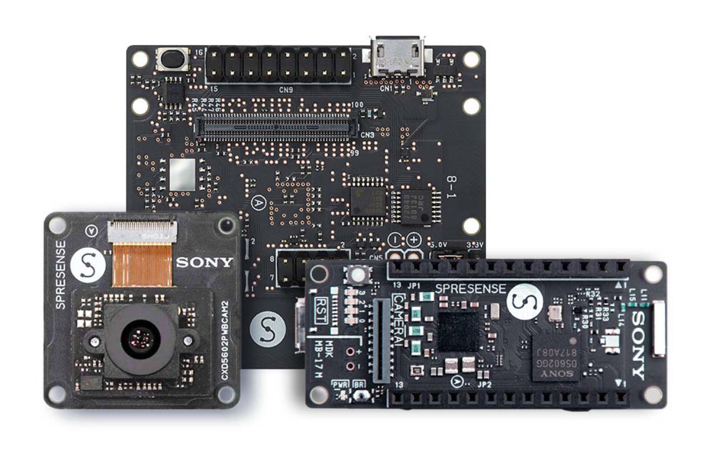
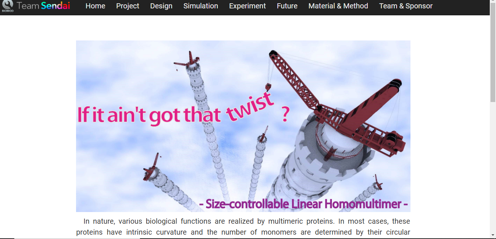
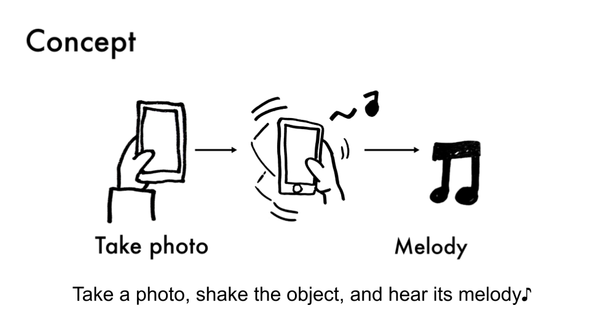
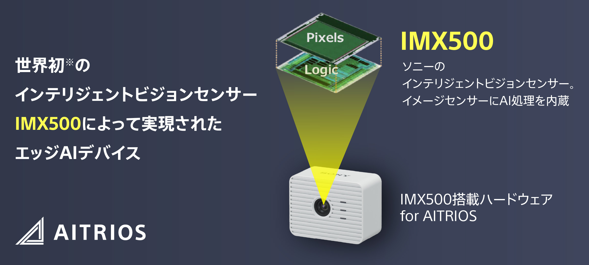

A WireGuard VPN that works as a normal network device, wg0 — on real boards, and inside a real NuttX kernel build.
ESP32-S3 & SPRESENSETUNNEL UP OVER REAL WI-FI
Real WireGuard peersLINUX KERNEL, WINDOWS CLIENT
rv-virt knetnsh64RUNS IN A REAL KERNEL BUILD (BUILD_KERNEL)
NuttX 13.0.1 / master / 12.7.0APPS V0.1.1 · ONE SOURCE
Satoru Akita / Sony Semiconductor Solutions
Apache NuttX

AITRIOS edge AI device (ESP32)

SPRESENSE
1 / 42
Today I will talk about adding WireGuard to Apache NuttX.
||
It is a WireGuard VPN that works as a network device called wg0. The tunnel runs over real Wi-Fi on ESP32-S3 and on SPRESENSE, and the other side is always a real WireGuard program — the Linux kernel module and the official Windows client. The apps version builds from one source on three NuttX versions. Later in the talk, the new driver also runs inside real KERNEL and PROTECTED builds. That is the harder and more interesting half.
||
But this talk is not about “it works.” It is about what “it works” was hiding, and what moving it into the kernel brought out.
Agenda
Seven parts, about thirty minutes.
1
Why I needed a VPN on a NuttX device
What NuttX is, how this project started, and the problem I had to solve.
~10 MIN
2
How I reused an existing WireGuard
Take wireguard-lwip and fit it into NuttX's own network device.
~2 MIN
3
Bugs that a working demo hid
Five bugs that only showed up in deeper tests.
~4 MIN
4
Moving the driver into the kernel
From an app to a real kernel device — and two more bugs.
~2 MIN
5
How I checked that it really works
Seven test setups, what ping can't tell you, and one design choice.
~10 MIN
6
Using a real board through the tunnel
telnet and a web page over WireGuard.
~2 MIN
7
What comes next, and what to take home
Running it for real, other CPUs, sending it to NuttX, and three lessons.
~3 MIN
2 / 42
Here is the plan for this talk.
||
There are seven parts. First, why I needed a VPN on a NuttX device: what NuttX is, how this project started, and the problem I had to solve. Second, how I reused an existing WireGuard. Third, five bugs that a working demo hid. Fourth, moving the driver into the kernel. Fifth, how I checked that it really works. Sixth, a short demo. And last, what comes next, and what to take home. About thirty minutes, then questions.
Agenda
Seven parts, about thirty minutes.
1
Why I needed a VPN on a NuttX device
What NuttX is, how this project started, and the problem I had to solve.
~10 MIN
2
How I reused an existing WireGuard
Take wireguard-lwip and fit it into NuttX's own network device.
~2 MIN
3
Bugs that a working demo hid
Five bugs that only showed up in deeper tests.
~4 MIN
4
Moving the driver into the kernel
From an app to a real kernel device — and two more bugs.
~2 MIN
5
How I checked that it really works
Seven test setups, what ping can't tell you, and one design choice.
~10 MIN
6
Using a real board through the tunnel
telnet and a web page over WireGuard.
~2 MIN
7
What comes next, and what to take home
Running it for real, other CPUs, sending it to NuttX, and three lessons.
~3 MIN
3 / 42
Let's start with part one.
About Me
From Nagoya, through space, robots, and many conferences.
Satoru Akita — edge AI engineer at Sony Semiconductor Solutions, working with Apache NuttX from the application side.
University
SpaceRoboticsMEMSSemiconductors
🎯 Many hackathons🎤 Runs software conferences📖 Wrote a book on open source

RoboticsMolecular robotics, BIOMOD world champion (2015)

Computer VisionAI and image processing systems

Edge AIAITRIOS edge AI cameras
Embedded SystemsSPRESENSE, embedded app contest — world 3rd
NuttX / WireGuardThis talk
4 / 42
First, a little about me.
||
I am an edge AI engineer at Sony Semiconductor Solutions. I work with Apache NuttX from the application side. I was born in Nagoya. I went to university in Sendai, where I studied space, robots, MEMS and semiconductors. Now I live in Kawasaki. I often join hackathons, I help run software conferences, and I wrote a book about open source.
||
My road to this project went through molecular robots, computer vision and AI systems, edge AI cameras, and embedded systems on SPRESENSE. NuttX and WireGuard are the latest stop on that road, not the start.
Overview: the project in one slide
This project adds WireGuard to NuttX as a network device.
Packets sent to wg0 are encrypted and sent out as UDP. UDP that comes in is decrypted and handed over as if it came in on wg0. The other side can be any normal WireGuard peer.
Takeaway
Apps see wg0 as a normal network interface. Only the "wire" under it is different: a UDP socket, not a cable.
5 / 42
Here is the whole idea in one picture.
||
Apache NuttX is an RTOS that follows POSIX and has its own TCP/IP stack. It had no VPN. This project adds wg0 as a virtual network interface. Applications see a normal interface. Under it, the encrypted data travels over a UDP socket. The other side is a real WireGuard peer — Linux, Windows, or another gateway.
||
Because NuttX follows POSIX and uses BSD sockets, it is a good fit for this work. I am not saying that FreeRTOS or Zephyr cannot run a VPN. I am saying that here, a VPN can become a normal network device very naturally.
How it started
From an idea in February to this talk in October.
MID FEBRead the GSoC idea list. Started to study.
EARLY MARWrote the plan as an issue and proposed it.
MAR 20Alan told me about this conference. Sent a talk.
EARLY APRSent the GSoC proposal.
EARLY MAYTalk accepted. GSoC proposal not selected — kept going anyway.
OCT 11–14Glasgow — this talk.
FEB
MAR
APR
MAY
JUN
JUL
AUG
SEP
OCT
JUN – JULBuilding a little at a time
AUG HOLIDAYMost of the work
SEP –FLAT app → kernel driver
DEVELOPMENT
Takeaway
The GSoC proposal was not selected, but the work went on — and the kernel driver, the harder half, came last.
6 / 42
Here is how this project went, month by month.
||
In the middle of February, I read the GSoC idea list and started to look into it. In early March, I wrote my plan as an issue and proposed it. On March 20, Alan told me about this conference, so I sent a talk proposal. In early April, I sent my GSoC proposal.
||
In early May, I got two answers. The talk was accepted, and the GSoC proposal was not. I decided to build it anyway.
||
From June, I worked on it a little at a time. I did most of the work in the summer holiday in August. In September, I moved it from a FLAT app into a kernel driver. That is the second half of this talk.
NuttX lets you program small embedded devices the Unix way — POSIX APIs, BSD sockets, files, and devices.
7 / 42
First, what is NuttX?
||
NuttX is a real-time operating system that puts standards first. It follows the POSIX and ANSI APIs, it uses BSD sockets for networking, and it has a real file system, a shell called NSH, built-in networking and device drivers. All of this is made small enough to run on microcontrollers, from 8-bit to 64-bit. It is also a top-level project of the Apache Software Foundation, and its community develops it in the open.
||
The one point I want you to remember: NuttX is a small RTOS, but you program it like Unix. That is rare. And that is why almost everything later in this talk — sockets, network devices, a POSIX-style port — is possible at all.
Background: NuttX and other RTOSes
Where NuttX fits — and where it is used.
RTOS
Main focus
Typical use
FreeRTOS
Small real-time kernel
MCU firmware, control, IoT
Zephyr
All-in-one platform for connected devices
Wearables, industrial & connected IoT
NuttX
Unix-like embedded OS
Networking, file systems, drones, sensing
FreeRTOS/FreeRTOS 7.8k★ · zephyrproject-rtos/zephyr 16.5k★ · apache/nuttx 4.1k★ Stars show how many developers notice a project, not how many devices use it.
NuttX has fewer stars than FreeRTOS and Zephyr, but it already runs in real products, from drones to the Moon.
Sources: nuttx.apache.org · nuttx.apache.org/market-share · docs.px4.io · GitHub star counts, October 2026
8 / 42
Thirty seconds on where NuttX fits, and whether it is a toy.
||
These are three good RTOSes, and each has a different focus. FreeRTOS is a small real-time kernel, on purpose, for MCU firmware and control. Zephyr is an all-in-one platform for connected devices, wearables and industrial IoT. NuttX is the Unix-like one: networking, file systems and drivers, used in drones and sensing. This is not a ranking. It is about shape. By GitHub stars, NuttX is the smallest of the three, and I want to say that clearly. But stars show how many developers notice a project, not how many devices use it.
||
And it is really used. Upstream there are more than fifteen CPU architectures, more than three hundred boards, and more than fifteen hundred configurations. In real products it runs in Sony devices, PX4 flight controllers, and more than a thousand Xiaomi OpenVela products, and it flew on Japan's 2024 Moon mission. It is small next to the big ones, but it is not a toy.
History: a long road with NuttX
NuttX at Sony — from audio to edge sensing.
2015
Sony audio products
NuttX inside Sony audio products.
2018–19
SPRESENSE / CXD56xx
Audio, GNSS, camera and multi-core support added to NuttX; shown at Open Source Summit + ELC Europe 2019.
2020
Upstream collaboration
Sony engineers become major NuttX contributors — “A Journey from Fork to Mainline,” NuttX Online Workshop 2020.
2020s
Sensing & edge devices
More camera, GNSS and sensing products.
Takeaway
Sony used NuttX long before edge AI. Years of audio products and SPRESENSE led to sensing and camera systems.
Sources: M. Ishikawa (Sony), “NuttX for Embedded Linux Developers,” OSS+ELC Europe 2019 · A. Jerpelea (Sony), “A Journey from Fork to Mainline,” NuttX Online Workshop 2020 · nuttx.apache.org/docs (CXD56xx)
9 / 42
This is Sony's history with NuttX. It is not my story yet, and it is older than edge AI.
||
Sony has sold audio products running NuttX since around 2015. A few years later, SPRESENSE and its CXD56xx chip added audio, GNSS, camera and multi-core support to NuttX. In 2019, Masayuki Ishikawa from Sony presented this work at Open Source Summit and Embedded Linux Conference Europe. After that, Sony engineers became major upstream contributors. One of them, Alin Jerpelea, later chaired the NuttX project management committee. His 2020 talk was called “A Journey from Fork to Mainline.”
||
I am not saying that one engineer made Sony choose NuttX. I have no source for that, so I will not say it. What public talks and documents do show is simpler: Sony used NuttX for many years before edge AI, and over time it spread into camera, GNSS and sensing work. My own experience stands on that.
Experience: where I come from
NuttX in SPRESENSE and AITRIOS — my part.
SPRESENSE
NuttX SDK · sensing & camera · GNSS / LTE · prototyping and embedded development.
AITRIOS / edge AI camera
Edge AI · setting up cameras · ESP32 + NuttX · running them on site, not on a desk.
Where I work: application development → system integration → deployment & operation.
Takeaway
My problem was not making NuttX run. It was reaching NuttX devices after they were installed.
10 / 42
That was Sony's history. This is mine. Same hardware family, but I see it from a different place.
||
On SPRESENSE, I use the NuttX SDK for sensing, camera, GNSS and LTE — prototypes and embedded development, on the application side. On AITRIOS edge AI cameras, which are built with ESP32 and NuttX, my job is to set up cameras and keep them running on site, not on a desk next to a debugger.
||
In both cases, I come to NuttX from the same direction: first application development, then putting the system together, then setting it up and running it. I never had to write a NuttX driver for any of that — until this project. And the question that brought me here was not “How do I make NuttX run?” It was “How do I reach a NuttX device after it is installed?”
Problem: Wi-Fi security stops too early
Reaching a device from far away is hard.
Open it to the Internet
Give the device a public IP and hope.
Make your own protocol
Build and maintain your own secure channel.
Use a vendor's cloud
Rely on someone else's cloud to reach your own device.
Takeaway
What was missing: a standard, secure path all the way to the NuttX device.
11 / 42
Now, the problem itself.
||
Wi-Fi security is real, but it protects only one part of the path: the radio link between the device and the access point. Everything before that — the engineer, the Internet, the router — is outside what WPA2 or WPA3 can protect. What I needed was a secure path for the whole way, from the engineer to the device, not just the last few meters.
||
Without that, every choice is worse. You can give the device a public IP and hope. You can make your own secure protocol and keep it working forever. Or you can hand the connection to a vendor's cloud. The same problem appears in edge AI, industrial IoT, and remote systems in general. It is not only this project.
Options: MQTT, HTTP, router VPN, ...
Other ways to reach a device — compared.
Way
Who connects
Any service (telnet, web…)?
Server in the middle?
Security ends at
On NuttX today
Open a port to the Internet
engineer → device
yes
no
the app (often nothing)
easy — and open to everyone
HTTPS to a cloud API
device → cloud (polling)
no — only your API
yes, a web server
the cloud server
webclient, libcurl4nx + mbedTLS
MQTT broker (TLS)
device → broker
no — messages only
yes, a broker
the broker
mqttc, paho_mqtt + mbedTLS
Reverse tunnel / relay (SSH, WebSocket)
device → relay
one port per tunnel
yes, a relay host
the relay host
dropbear, libwebsockets
VPN on the router
router ↔ office
yes — the whole LAN
no
the router; the LAN hop is open
no change on the device — but you need that router
Carrier closed network (private APN, SIM VPN)
through the carrier
yes
yes, the carrier
the carrier gateway
LTE modem; cellular only
VPN on the device (this talk)
either side
yes — any IP service
no — any WireGuard peer
the device itself
wg0
Takeaway
MQTT and HTTPS are great for data. To log in and fix a device, end to end, with no server in the middle, the VPN has to be on the device.
Mesh VPN agents (Tailscale, ZeroTier) are another “VPN on the device” option, but they usually need a bigger OS. NuttX clients: nuttx-apps 13.0.1 netutils/ (mqttc, paho_mqtt, webclient, libcurl4nx, libwebsockets, dropbear) and crypto/mbedtls.
12 / 42
Before I chose WireGuard, I compared the usual ways to reach a device.
||
Opening a port is easy, but then the whole Internet can reach the device. HTTPS and MQTT are what most IoT products use. The device connects out to a server, so NAT is not a problem, and NuttX already has clients for both. But you only get the messages you designed — you cannot log in or open a web page on the device. And the security ends at the broker or the cloud.
||
A reverse tunnel gives you one port through a relay server. A VPN on the router is great when the router is yours — but the last part of the path, on the LAN, is not protected, and at a customer's site the router is usually not yours. A carrier closed network works only over cellular, and you need a contract.
||
A VPN on the device is the only row that has it all: any IP service, no server in the middle, and security all the way to the device. MQTT and HTTPS are still the right tools for data. This is for maintenance access.
Solution: a VPN on the device
Why WireGuard is a good fit.
Modern IP-layer VPN small and simple — much less code than IPsec or OpenVPN.
UDP transport, public-key peers no certificates and no session setup to manage.
Already everywhere in the Linux kernel, with an official Windows client — it works with existing peers, not a custom protocol.
Takeaway
WireGuard solves the access problem with a standard protocol, not a homemade security layer or a vendor cloud.
13 / 42
So, why WireGuard?
||
WireGuard is a modern VPN that works at the IP layer. It is small and simple by design, with much less code than IPsec or OpenVPN, and that matters a lot on a microcontroller. It runs over plain UDP, and each peer is known by its public key, not by certificates or a long setup. And most important, it is not unusual. It has been in the Linux kernel for years, there is an official Windows client, and the other end can be any WireGuard peer.
||
So I did not choose a product. I chose a standard protocol, instead of making my own or depending on a vendor's cloud. That is why it fits this problem.
Architecture: where wg0 sits
WireGuard on the NuttX network stack.
Takeaway
To NuttX, wg0 is a normal network device. Under it, WireGuard turns its packets into encrypted UDP.
14 / 42
This is one step more technical than the overview. Here the implementation starts.
||
Going out, a packet comes down from the application through TCP or UDP and IP, and reaches wg0 like any other network device. WireGuard encrypts it, and it leaves as a UDP packet — through wlan0 on a board, or through usrsock when the Wi-Fi chip itself works through sockets. Coming in is the same path the other way: a UDP packet arrives, WireGuard decrypts it, and it is passed up to wg0 as if it came in on a normal interface.
||
From here on, the work is building this middle part — wg0 and the encryption — without changing the layers above or below it.
Agenda
Seven parts, about thirty minutes.
1
Why I needed a VPN on a NuttX device
What NuttX is, how this project started, and the problem I had to solve.
~10 MIN
2
How I reused an existing WireGuard
Take wireguard-lwip and fit it into NuttX's own network device.
~2 MIN
3
Bugs that a working demo hid
Five bugs that only showed up in deeper tests.
~4 MIN
4
Moving the driver into the kernel
From an app to a real kernel device — and two more bugs.
~2 MIN
5
How I checked that it really works
Seven test setups, what ping can't tell you, and one design choice.
~10 MIN
6
Using a real board through the tunnel
telnet and a web page over WireGuard.
~2 MIN
7
What comes next, and what to take home
Running it for real, other CPUs, sending it to NuttX, and three lessons.
~3 MIN
15 / 42
That is the background. Next: how I reused an existing WireGuard.
Porting: four functions to write
Reusing wireguard-lwip without lwIP.
Protocol & crypto — KEEP
Handshake, transport, BLAKE2s, ChaCha20-Poly1305, Curve25519. Portable C, no OS dependency. Used as-is.
Platform hooks — ADAPT
Everything OS-specific sits behind wireguard-platform.h — four functions: clock, random bytes, TAI64N time, load check.
lwIP network glue — REPLACE
wireguardif.c's lwIP netif registration and buffers. NuttX has no lwIP, so this layer is the real porting work.
Takeaway
A clean line between the protocol and the OS let the protocol and crypto move unchanged. Only the OS and network glue had to change.
16 / 42
Why I started from smartalock/wireguard-lwip, and did not write the crypto myself.
||
wireguard-lwip is cleanly split into three layers. The protocol and crypto — the handshake, the data transport, BLAKE2s, ChaCha20-Poly1305 and Curve25519 — are portable C that does not depend on any OS, so I used them without changes. Everything that depends on the OS was already kept behind one header, wireguard-platform.h, as four functions. I only had to replace the lwIP network glue — the part that registers an lwIP netif and handles lwIP buffers — because NuttX does not have lwIP at all.
||
I did not have to rewrite anything, and that was not luck. That is what a clean line between the protocol and the OS gives you. Because of it, this port took weeks, not months.
Design: one virtual network card
Mapping lwIP onto NuttX netdev.
Concept
lwIP
NuttX
Network device
struct netif
struct net_driver_s
Buffers
pbuf
iob
Registration
netif_add()
netdev_register()
Start sending
callback
devif_poll()
wg0 is a NET_LL_TUN netdev, and its wire is a UDP socket.
Takeaway
Porting meant using NuttX's own building blocks, not bringing lwIP into NuttX.
17 / 42
This was the most important porting decision.
||
Instead of bringing lwIP into NuttX, I matched each lwIP idea to NuttX's own. netif becomes net_driver_s, pbuf becomes iob, netif_add becomes netdev_register, and the send callback becomes NuttX's devif_poll. wg0 is registered as a TUN-type network device, and the “wire” under it is a UDP socket.
Result: the first working tunnel
A working tunnel is only the beginning.
Layer
Work needed
In this port
Protocol & crypto
None — portable C, as-is
3,079 lines, exactly the same as upstream
OS hooks
Small — four functions
clock, /dev/urandom, TAI64N, load
Network glue
The real work
netdev + UDP socket + RX task
It worked: wg genkey / set / setconf at run time — no rebuild to change keys or peers.
And this is where the interesting part starts — getting it to work was the easy part.
Takeaway
Getting a tunnel up was the easy step. Almost everything interesting came after it already “worked.”
18 / 42
Here is the result of the first version.
||
The protocol and crypto came over exactly as they were — more than three thousand lines, unchanged. The four OS functions are small. The real work was the network glue. And it worked: you can make a key, set peers and load a config, all at run time, with no rebuild. So far, a success story. The rest of this talk is about what that success was hiding.
Agenda
Seven parts, about thirty minutes.
1
Why I needed a VPN on a NuttX device
What NuttX is, how this project started, and the problem I had to solve.
~10 MIN
2
How I reused an existing WireGuard
Take wireguard-lwip and fit it into NuttX's own network device.
~2 MIN
3
Bugs that a working demo hid
Five bugs that only showed up in deeper tests.
~4 MIN
4
Moving the driver into the kernel
From an app to a real kernel device — and two more bugs.
~2 MIN
5
How I checked that it really works
Seven test setups, what ping can't tell you, and one design choice.
~10 MIN
6
Using a real board through the tunnel
telnet and a web page over WireGuard.
~2 MIN
7
What comes next, and what to take home
Running it for real, other CPUs, sending it to NuttX, and three lessons.
~3 MIN
19 / 42
That was the porting. Now, the part this whole talk is built around.
The Testing Pattern
Simple tests pass. Deeper tests fail.
A simple test passes. A deeper one fails.
Because the simple test passed, you trust that part and spend hours looking somewhere else. This happened again and again in this project — and not only in the apps version.
20 / 42
This is the heart of the talk.
||
Every hard bug in this project looked the same. A simple test passes, but a deeper one fails. Even worse, the passing test makes you believe that part is fine, so you look everywhere else for hours. The next slides are examples of this pattern — five in the apps version, and two more after I moved it into the kernel.
Bug 1 / 7
A return code of 0 that did nothing.
setsockopt(SO_RCVTIMEO) returns 0 — success.
But recvfrom() still blocks forever. The timeout was accepted, then ignored.
A perfect deadlock:
timer never fires → no handshake is sent → the peer stays silent → recvfrom() never returns.
Takeaway
setsockopt() returning 0 does not prove the option works — an unsupported option can show up as a deadlock, not as a clear error.
21 / 42
The first one: a success code that did nothing.
||
Setting a receive timeout returned zero, which means success. But recvfrom still waited forever. The option was accepted and then quietly ignored. And that made a perfect deadlock: the timer never fired, so no handshake was sent, so the peer never answered, so recvfrom never returned to let the timer fire.
Bug 2 / 7
Created successfully. Did not survive.
The RX thread was started with pthread_create() + pthread_detach().
When the wg command exited, the thread stopped — not even visible in ps.
A usleep() right after create made the thread's printf appear — so it was created.
My mistake: I thought detach meant “lives longer than the command.” It only controls when the thread's memory is freed — not whether it keeps running after the command exits.
Takeaway
pthread_detach() decides when memory is freed, not how long the thread lives — a detached thread still dies with the task group that started it.
22 / 42
The second: something I believed about a thread's life that was not true.
||
The receive thread was created as detached. When the command that started it finished, the thread stopped too — it did not even appear in ps. When I added a short sleep after creating it, its printf ran, so it really was created. My mistake was thinking that “detached” means “it lives longer than the command.” Detach only decides when the thread's memory is freed, not whether it keeps running after the command exits. So when the command ended, the thread ended with it. That is why, in the kernel version, the driver itself owns the thread.
Bug 3 / 7 · my favorite
ping works. TCP dies.
Same tunnel: ping is 0% loss. A telnet 3-way handshake even completes — then the connection dies.
The sends that worked ran inside the wg_rx task. Sends from another task got EBADF.
Cause: an fd belongs to one task group; it is not global.
Fix: use the internal API without fds — psock_*() on a struct socket, which any task can use.
Takeaway
In NuttX, a file descriptor belongs to one task group. Another task cannot use it, even though it points to the same socket.
23 / 42
This is my favorite bug in the project.
||
On the same tunnel, ping was perfect, and even a TCP handshake finished — and then the connection died. When I added logging to the send path, it showed EBADF: bad file descriptor. All the sends that worked happened inside the receive task itself — handshake replies, keepalives, ping replies, the SYN-ACK. Sends from any other task failed.
||
The reason: in NuttX, a file descriptor belongs to one task group. It is not shared by the whole system. The fix was to stop using file descriptors and use NuttX's internal socket API. It works on a struct socket, which is just memory, so any task can use it. That is exactly why the kernel version keeps the socket as a struct socket.
Bug 4 / 7
“No real impact” was 10×.
The fix without fds also broke poll(). Quick fix: check every 50 ms.
I thought: “it only wakes the CPU when idle.” Wrong — each packet waited up to 50 ms, and that made it 10× slower.
Fix: hook psock_poll() with a callback and a semaphore — a real blocking wait.
Takeaway
The 50 ms polling kept things correct but made it about 10× slower — a quick fix you never measure can look free and cost 10×.
24 / 42
The fourth: something I never measured.
||
The fix without file descriptors also broke poll, because poll works with file descriptors. So, as a quick fix, I checked the socket every fifty milliseconds. I thought the only cost was waking up the CPU when it was idle. I was wrong. Every packet that arrived waited up to fifty milliseconds, and that alone limited the speed — about ten times slower than it should be. I thought it had no real cost, and it cost ten times. The real fix was a proper wait: a callback on psock_poll and a semaphore.
Bug 5 / 7
sim passes. Hardware freezes.
Saving the config with wg showconf > /data/wg0.conf froze the board — only on real hardware with SPIFFS, never in sim.
The wg_rx task calls ipv4_input() on its own stack — so the whole TCP call chain runs on it, plus encrypting the reply.
Default 3072 B was a number nobody had measured. Found with CONFIG_STACK_COLORATION + ps.
Takeaway
A default stack size is only a guess until you measure it on the real hardware — sim's big stacks hide the problem.
25 / 42
The fifth, and it will come back later: stack sizes nobody had measured.
||
Saving the config into a file froze the board — but only on the flash file system of real hardware, never in sim. The cause was the receive task's stack. That task calls into the IP stack on its own stack, so the whole TCP call chain sits on it, and for packets it answers right away, so does encrypting the reply. The default size, 3072 bytes, was a number nobody had measured. I found it with stack coloration and ps. Please remember this one.
Agenda
Seven parts, about thirty minutes.
1
Why I needed a VPN on a NuttX device
What NuttX is, how this project started, and the problem I had to solve.
~10 MIN
2
How I reused an existing WireGuard
Take wireguard-lwip and fit it into NuttX's own network device.
~2 MIN
3
Bugs that a working demo hid
Five bugs that only showed up in deeper tests.
~4 MIN
4
Moving the driver into the kernel
From an app to a real kernel device — and two more bugs.
~2 MIN
5
How I checked that it really works
Seven test setups, what ping can't tell you, and one design choice.
~10 MIN
6
Using a real board through the tunnel
telnet and a web page over WireGuard.
~2 MIN
7
What comes next, and what to take home
Running it for real, other CPUs, sending it to NuttX, and three lessons.
~3 MIN
26 / 42
Those were the five bugs. Now the harder half: making this a real kernel driver.
Part 3 · Going deeper
Into the kernel.
The limit of version 1
It lives in apps/ and uses psock_* internals. Fine for a FLAT build — but it can never be a proper in-tree driver, and it does not work in PROTECTED / KERNEL builds, where apps and kernel are kept apart.
The move
Put the device in the kernel — drivers/net/wireguard/ — and control it from a small user-space wg command with ioctl.
Takeaway
An app-level port proves the protocol works. Only a kernel driver is a proper device that also works in PROTECTED and KERNEL builds.
27 / 42
This is the work I did after the first version, and it is the part that makes it ready to merge.
||
Version one lives in apps and uses socket internals. That is fine for a FLAT build. But it can never be a proper in-tree driver, and it does not work in PROTECTED and KERNEL builds, where user space and the kernel are kept apart. So I moved the device into the kernel, under drivers/net/wireguard, and I control it from a small user-space wg command through ioctl.
The Kernel Design
A kernel netdev, an ioctl ABI, a write-only key.
Kernel netdev netdev_lowerhalf with its own UDP socket, receive thread, timers and cookies — the driver owns the socket and the thread, so they no longer die with the command that started them.
Simple ioctl ABI with no pointers SIOCS/GWGIF, SIOCS/D/GWGPEER — no pointers, because in PROTECTED / KERNEL builds the kernel copies the caller's struct as it is.
Private key is write-only the get ioctl never returns the private key.
Kernel crypto is NuttX's own BLAKE2s, ChaCha20-Poly1305, Curve25519 from crypto/ — no copied code in the kernel. The only copied file, an MIT-licensed X25519, is in the user-space command for offline genkey — using the kernel's Curve25519 through cryptodev would pull in the whole software cipher set for one multiply.
Takeaway
The socket, the thread and the no-pointer ABI follow one rule: don't depend on code that can exit, or on memory the kernel can't reach.
28 / 42
This is the shape of the real driver.
||
wg0 is now a lower-half network device in the kernel. It owns its UDP socket and its receive thread, so the socket and thread problems from part three cannot happen, by design. The settings go through a simple ioctl ABI with no pointers. No pointers, because the kernel copies the caller's struct as it is. The private key is write-only: no ioctl ever gives it back — but it is still in the config file on the user side. The crypto in the kernel is NuttX's own. The only copied code is a small MIT-licensed X25519 in the user-space command, for making keys offline.
Two more bugs: same shape
Deeper level, same kind of bug.
A bug in NuttX's own crypto
chacha20poly1305 put the counter in the wrong nonce bytes. Counter 0 matches, so the handshake succeeds and every data packet after the first fails. Nothing in NuttX had ever used it. Two-line fix, going upstream as a separate crypto: PR.
A BUILD_KERNEL-only crash
wg_set_if() copied the peers into a 6 KB array on the stack; the kernel stack is 3 KB → overflow → heap corruption → panic. sim (FLAT, big stacks) never hit it. Moved to the heap.
Takeaway
A working handshake does not prove the data path or the kernel code is right — both bugs only showed up after the handshake, in a real kernel build.
29 / 42
And the same pattern came back in the kernel — twice.
||
First, a bug in NuttX's own ChaCha20-Poly1305: the counter was written into the wrong bytes of the nonce. When the counter is zero, both layouts are the same, so the handshake works, and then every data packet after the first one fails to decrypt. Simple test passes, deep test fails. Nothing in NuttX had called this code before, so nobody had hit it. It is a two-line fix, and it goes upstream as its own crypto PR. Porting to the project found a hidden bug in the project.
||
Second, a crash that happened only in a kernel build. Setting the key copied the peers into a six-kilobyte array on the stack, but the kernel stack is only three kilobytes. Overflow, a broken heap, panic. In sim, with big task stacks, it never showed up. It was the same stack lesson as before, one level deeper. I moved the array to the heap.
Agenda
Seven parts, about thirty minutes.
1
Why I needed a VPN on a NuttX device
What NuttX is, how this project started, and the problem I had to solve.
~10 MIN
2
How I reused an existing WireGuard
Take wireguard-lwip and fit it into NuttX's own network device.
~2 MIN
3
Bugs that a working demo hid
Five bugs that only showed up in deeper tests.
~4 MIN
4
Moving the driver into the kernel
From an app to a real kernel device — and two more bugs.
~2 MIN
5
How I checked that it really works
Seven test setups, what ping can't tell you, and one design choice.
~10 MIN
6
Using a real board through the tunnel
telnet and a web page over WireGuard.
~2 MIN
7
What comes next, and what to take home
Running it for real, other CPUs, sending it to NuttX, and three lessons.
~3 MIN
30 / 42
The driver is done. Now: how do I know it really works?
Testing: simulator, QEMU, real boards
Seven places it must work.
Where
Version
What I checked
sim:wireguard
kernel driver
builds with no errors (the config CI builds)
rv-virt knetnsh64
kernel · BUILD_KERNEL
virtio-net tunnel to Linux; wg is a separate program that calls in through syscalls
rv-virt pnsh64
kernel · BUILD_PROTECTED
tunnel with the MPU split on — wg in nuttx_user, every ioctl crosses the boundary, no fault
rv-virt knetnsh64_smp
kernel · SMP, 4 CPUs
heavy traffic while changing the config and doing down/up — no fault, tunnel came back
SPRESENSE, measured
kernel · Cortex‑M4F
under load and 40 down/up cycles: heap, buffers and stacks exactly the same — receive thread uses 1472 B of 6096
ESP32-S3 + SPRESENSE
kernel · real Wi-Fi
tunnel to the Windows client — ESP32 native 4/4, SPRESENSE via usrsock 6/6
same two boards
apps v0.1.1
Linux & Windows peers; telnet, HTTP, 7 MB, rekey, power-cycle
Both boards, PROTECTED and KERNEL, many CPUs — measured, not guessed.
Takeaway
A tunnel in sim is not enough — test real builds, many CPUs, and real hardware.
Hardware tests used the version before the final rebase onto upstream; KERNEL/SMP tunnels were run again on the rebased version.
31 / 42
Let me be exact about which version was checked where.
||
The kernel driver builds with no errors in the sim config — the config that CI builds — and it runs as a full tunnel in a real kernel build: rv-virt knetnsh64 in QEMU, over virtio-net to WireGuard in the Linux kernel. The wg command is loaded as a separate program, and it reaches the driver through system calls.
||
Next, the other build type. The ioctl ABI is a fixed struct with no pointers inside, so the kernel never has to read user memory. If that idea is wrong, you do not get a compile error. You get an MPU fault on the first call. PROTECTED had only been built before, on a board with no emulator. So I ran it on rv-virt's protected config: it boots with the memory split, the wg command lives on the user side, every ioctl crosses the boundary, and the tunnel reaches Linux WireGuard with no fault, no assertion and no panic. The memory map is the default one — the kernel uses eighty percent of its part, and the user command uses eight percent of the other.
||
Then, locking. The driver protects its protocol state with the device lock. It does not depend on there being only one CPU. Until this week, I could only argue that from the code; I had never really tested it. So: four CPUs, two thousand packets coming in, while another CPU changes the settings and takes the interface down and up. No fault, no assertion, and the tunnel came back. One scripted test on an emulator is not a full search for race conditions, so a race that needs very exact timing could still be hiding. But the claim is no longer only on paper.
||
The last row is the one I would show a reviewer first. The long test in sim said that memory came back exactly to where it started. That is good, but the simulator uses the host's memory allocator and 64-bit frames, so none of those numbers apply to a board. So I measured the board itself: a hundred and twenty seconds of traffic, then forty down-and-up cycles. Each one closes and reopens a socket on the Wi-Fi module through usrsock and does a new handshake over real Wi-Fi. Heap, number of allocations, buffer pool, and the peak of every stack: exactly the same before and after. And the number I really wanted — the most stack the receive thread ever used — is one thousand four hundred and seventy-two bytes, out of a six-kilobyte default. That default used to be a guess. Now it is a measurement.
||
And now it runs on real hardware — both boards. I flashed the kernel driver to an ESP32-S3, with a tunnel to the official Windows WireGuard client over real Wi-Fi. I also flashed it to a SPRESENSE. Its GS2200M Wi-Fi works through usrsock, so the driver really sends through usrsock on real hardware. Then I forced the exact failure this design is for, on that board: a packet stuck waiting on the real usrsock side while control commands arrive. A query got an answer, a peer update was accepted, the stop command reported a timeout instead of hanging, the stuck packet was left alone, and a second down cleaned it up, so the interface came back. This still does not cover running out of IOBs, losing Wi-Fi in the middle of a send, or long heavy traffic. The older apps version on both boards — telnet, HTTP, a seven-megabyte transfer, rekeying, and recovery after power loss — is still checked as well.
Testing: what ping misses
A working tunnel does not prove enough.
Problem
Would ping notice?
What I measured
The same private key on every boot — the xorshift128 /dev/urandom backend can be seeded from build‑time values
no — every normal test still passes
3 restarts → 3 different keys; a basic check of the entropy pool path, not proof of good randomness
Session keys left in memory after down
no
read the running memory: transport keys 32/32 bytes set while up → all zero after down; exactly one copy of the static key, before and after
A leak that only shows after hours
no
151 forced rekeys past the key lifetime, 10 endpoint changes, 100 down/up: no buffers lost, allocations back to the boot count exactly, RX‑thread stack peak 2.5 KB and not growing
Each of these passes every normal test while being broken.
Takeaway
A working tunnel does not prove unique keys, cleared secrets, or stable memory — each needs its own check.
32 / 42
The last slide was about where it runs. This one is about what a working tunnel cannot tell you.
||
Take making keys. NuttX can provide /dev/urandom with an xorshift128 backend, and its seed can come from build-time settings. A board left like that can give out the same private key every time it starts. The handshake works. Ping works. The demo works. But the tunnel is worthless, and nothing I have shown you so far would notice. So I reset the board three times and compared one new key from each start: three different keys, with the entropy pool backend chosen, not xorshift128. That is a useful check that the problem has not come back, but it does not prove the randomness is good.
||
Second, what is left after you take the interface down. Here I stopped reading the code and read the memory instead. I found the device in the running system by searching for the key I had set, and then checked each secret field by name, at offsets taken from the driver's own headers. The transport keys are filled while the tunnel is up, and every byte is zero after down. The handshake data is already gone while it is up, because it is erased as soon as the keys are made. The static key is still there — on purpose, because up has to work again — and there is exactly one copy of it in all writable memory, before and after. This difference is a decision, so it is now written in the driver's documentation, and a reviewer does not have to guess.
||
Third, the long test. A hundred and fifty-one forced rekeys, past the point where sessions expire. Ten endpoint changes. A hundred down-and-up cycles. And memory checked the whole time. The buffer pool comes back complete, and the number of live allocations goes back to exactly the number at start-up — not close, the same. The receive thread's stack peak is two and a half kilobytes, and it does not grow after the first sample. That last number is useful by itself: the default stack for that thread is six kilobytes, so the safety margin is real, not just hoped for. What I am not saying is that it ran for a week, or that the simulator's allocator and 64-bit frames act like the board.
Design choice: trust the clock?
The timestamp problem has no easy answer.
A peer drops any handshake whose timestamp is not newer than the newest it has seen. So the device must always send a newer one — even after a reboot.
Option
Flash writes
Works without RTC
Result
Real-time clock + highest value this boot
none
no
chosen
Save every timestamp
every handshake
yes
wears out flash, slows the handshake
Reserve a range in flash
one per N
yes
needs a storage guarantee NuttX does not have
Wait until it catches up
none
no
you wait as long as it last ran
On the board, only one thing changed, nothing sent to it: clock unset → no handshake in 75 s; clock set → 4.1 s.
Used the same rule as Linux and wireguard-go — and made the case it misses print a warning.
Takeaway
No clock, no newer timestamp: a device may be unable to connect out and still pass a ping test.
33 / 42
This is the one place where I had to decide, not test. And then I measured my decision.
||
WireGuard's replay protection gives the side that starts the handshake a rule: every handshake must have a newer timestamp than anything that peer has already accepted — and this must stay true after a reboot. The device is usually the side that starts, and it is also the side least likely to have a clock with a battery.
||
In my test, recovery took seventy-five seconds, but that number is misleading. The device has to get past the last handshake of its previous session, so it is cut off for as long as it ran last time. It was seventy-five seconds only because that session was short. A device that ran for a month cannot reconnect for a month. So doing nothing is not an option.
||
Saving the timestamp at every handshake means writing to flash every few minutes, forever, on the path that most needs to be fast. Reserving a range in flash and using it up from RAM is the right long-term answer, and I have written up that design. But it needs storage that promises the order and safety of its writes, and I could not get that. On my machine, hostfs sync calls an empty function and returns OK, so a successful write in the simulator proves nothing about power loss. Shipping that would look solved without being solved.
||
So I chose the real-time clock plus the highest value used in this boot. That is exactly what Linux and wireguard-go do, and it never falls back to uptime. What I added is the part a desktop never needed, because a desktop always has a clock. Without an RTC, NuttX starts the clock from a set year. So if the clock is still before the next year, it was never set — and the driver prints a warning once, and says what will happen. It still sends the timestamp, because a peer that meets this key for the first time will accept it, and refusing would break first pairing on exactly those boards. This one line of output is about a failure that is not a crash. It is a tunnel that silently never comes back, on a device that is not on your desk.
||
And I did measure it on the board, because a design idea you cannot show is just an opinion. The trap is that the obvious test passes. Reset the board, ping it, and the tunnel is back in sixteen seconds — because your ping made the peer start the handshake, and the side that answers does not need its own timestamp. The device could be completely unable to connect out, and that test still passes.
||
So I sent the board nothing at all, and watched how it saw its own session. Two runs, same board, same peer, same image, only one change. With the clock as it boots, the driver warns, and there is no handshake after seventy-five seconds. With the clock set from my laptop, the warning stops, and the handshake finishes in four point one seconds. That shows both sides at once: the unsolved case is real on hardware, not just in a simulator, and the design works wherever there is a clock. Issue fourteen stays open because I decided it should, not because I ran out of evidence.
Agenda
Seven parts, about thirty minutes.
1
Why I needed a VPN on a NuttX device
What NuttX is, how this project started, and the problem I had to solve.
~10 MIN
2
How I reused an existing WireGuard
Take wireguard-lwip and fit it into NuttX's own network device.
~2 MIN
3
Bugs that a working demo hid
Five bugs that only showed up in deeper tests.
~4 MIN
4
Moving the driver into the kernel
From an app to a real kernel device — and two more bugs.
~2 MIN
5
How I checked that it really works
Seven test setups, what ping can't tell you, and one design choice.
~10 MIN
6
Using a real board through the tunnel
telnet and a web page over WireGuard.
~2 MIN
7
What comes next, and what to take home
Running it for real, other CPUs, sending it to NuttX, and three lessons.
~3 MIN
34 / 42
That was all engineering. Now, what it actually looks like.
Demo setup: the network
One tunnel, on a phone's local network.
Takeaway
The phone and the venue only ever see encrypted UDP — no server in the middle, no cloud.
35 / 42
Here is the demo setup.
||
My laptop and the StackChan are both on my phone's hotspot. The venue Wi-Fi works, but it blocks devices from talking to each other, so the phone makes a small local network for us. The phone can use the venue Wi-Fi or mobile data for its own Internet, but the demo does not need it.
||
Between the laptop and the StackChan there is one WireGuard tunnel. The laptop side is a normal Linux WireGuard in a container, at 10.10.0.1. The StackChan is 10.10.0.2. Everything in the demo — telnet, the web page, and even the voice — goes through that tunnel. I made the voice clips on the laptop in advance, so there is no cloud API anywhere.
||
Please watch two things: the addresses after I log in, and the packets. Outside the tunnel, you only see encrypted UDP.
Demo: live on the StackChan
Log in through the tunnel, and talk to the robot.
1 wg show # handshake, bytes
2 telnet 10.10.0.2 # log in
3 ifconfig # wlan0 and wg0
4 stackchan face happy
5 stackchan say hello.wav
6 tcpdump: outside vs. inside
7 wg show # bytes went up
Outside the tunnel (the phone's network): only encrypted UDP on port 51820.
Inside the tunnel (wg0): the telnet text you just typed.
Backup video: youtu.be/1kyX2av5WG4
36 / 42
The point of this demo is that there is nothing special to see. The StackChan is just a normal computer at the far end of an encrypted tunnel.
||
First, wg show on the laptop: the handshake is done, and you can see the StackChan's address on the phone's network. Then I telnet to 10.10.0.2 — that is the address inside the tunnel. When I type ifconfig, you see both: wlan0 on the phone's network, and wg0 inside the tunnel. So I am really logged in through the tunnel.
||
Now I can control it. Let's make it happy, and let it say hello. The voice comes from the laptop through the same tunnel.
||
Last, the packets. On the left, the phone's network: only encrypted UDP. On the right, inside the tunnel: the same telnet session, in plain text. And wg show again: the byte counts went up.
Agenda
Seven parts, about thirty minutes.
1
Why I needed a VPN on a NuttX device
What NuttX is, how this project started, and the problem I had to solve.
~10 MIN
2
How I reused an existing WireGuard
Take wireguard-lwip and fit it into NuttX's own network device.
~2 MIN
3
Bugs that a working demo hid
Five bugs that only showed up in deeper tests.
~4 MIN
4
Moving the driver into the kernel
From an app to a real kernel device — and two more bugs.
~2 MIN
5
How I checked that it really works
Seven test setups, what ping can't tell you, and one design choice.
~10 MIN
6
Using a real board through the tunnel
telnet and a web page over WireGuard.
~2 MIN
7
What comes next, and what to take home
Running it for real, other CPUs, sending it to NuttX, and three lessons.
~3 MIN
37 / 42
Last part: going from a demo to something you can run, and what to take home.
Running it for real
From a demo to something you can run.
Before
After
Keys
built into Kconfig; rebuild to change
genkey / set / setconf at run time; never in the firmware image
When it stops
guessing
check ROUTER / LAN / TUN / TCP every minute — find which part failed
Four separate checks answer one question: when the tunnel goes quiet, is it my side?
Takeaway
Run-time keys and per-layer checks turn "the tunnel is down" into "the router side is down" — that is the difference between a demo and something you can leave running.
38 / 42
Going from “it works in a demo” to “you can really run it.”
||
Keys are no longer built into the firmware. You make them and set them at run time, and they never end up in the firmware image. And for long runs, I check four separate signals every minute — is the router side alive, is the board on the network, is WireGuard carrying traffic, is the application data moving — so when it goes quiet, I can say which part failed instead of guessing.
Other CPUs: beyond the first board
Did the “four functions” bet work?
The apps (FLAT) version ran on four CPU types with no code change:
Target
Code change
Result
x86_64 (sim)
none
tunnel
ARM Cortex-A7 (QEMU)
none
tunnel
Xtensa LX7 (ESP32-S3)
none
tunnel over real Wi-Fi
ARM Cortex-M4F (SPRESENSE)
none
tunnel over real Wi-Fi (GS2200M)
Takeaway
Four small OS functions let one source run on four CPU types, unchanged — the bet paid off.
Checked with the apps (FLAT) version; the kernel driver was also checked on sim, rv-virt (BUILD_KERNEL) and both boards over real Wi-Fi (ESP32-S3 native, SPRESENSE over usrsock).
39 / 42
Did the decision from the start work?
||
Keeping the OS behind a few functions was a bet. Here is the check, with the apps FLAT version: four CPU types — x86, ARM Cortex-A7, Xtensa on the ESP32, and Cortex-M4F on SPRESENSE — and no code change to move between them. The kernel driver also runs on sim and on the rv-virt kernel build. The bet paid off.
Giving back: sending it to NuttX
The Apache Way: small steps, in the open.
A small crypto: PR first the ChaCha20-Poly1305 nonce fix — it helps NuttX on its own.
Then the driver PR net/wireguard — the kernel device, ABI, and its documentation.
Then the command PR apps/system/wg — the command that talks to the driver.
Design ready for dev@nuttx.apache.orgpasses checkpatch / nxstyle, split into PRs, licenses checked — community over code.
Takeaway
Sending the crypto fix as its own PR lets NuttX take it even if the driver is not accepted.
Status: three signed branches are ready on my forks; the upstream discussion and PRs have not started yet.
40 / 42
Let me end this part with the values of this community.
||
I will send the work in steps. First, a small crypto PR for the nonce fix, because it is useful on its own and helps everyone. Then the driver PR for the kernel device, and then the command PR for the user-space tool. Three signed branches are ready on my forks, and they pass the patch checks. The design discussion and the upstream PRs are the next step; they have not started yet. Community over code means being honest about where the work really is, and then letting review change it.
Takeaways: what to take home
Three things to carry out.
Simple tests pass, deep tests fail test deeply — long data runs, real hardware, a real kernel build — not just “the handshake worked.”
A clean OS boundary pays off four CPU types, three NuttX versions, no changes.
Porting to a project can make the project better two hidden NuttX bugs found on the way — its ChaCha20-Poly1305 nonce, and a boot bug that stops a clean release from reaching the shell on this board.
41 / 42
Three things to take home.
||
First, simple tests pass and deep tests fail — so design your tests to go deep: long data runs, real hardware, a real kernel build, not just a handshake. Second, a clean line between your code and the OS is worth the effort — four CPU types and three NuttX versions, with no changes. Third, porting to a project is a chance to make it better. One bug was in NuttX's own crypto, and that fix goes upstream by itself. I found the second only because I wanted my board image to build from a clean checkout: a normal release tag does not boot to the shell on this board, because before the RTC starts, the clock reads zero, and the watchdog that should finish starting the RTC never fires. And the third was in my own driver, and only a real kernel build showed it; sim never would have.
Thank you
WireGuard for Apache NuttX
Demo: youtu.be/1kyX2av5WG4
Going upstream to:apache/nuttx, apache/nuttx-apps
Satoru Akita / Sony Semiconductor Solutions
Questions welcome.
42 / 42
Thank you. I am happy to take your questions — about the kernel driver, the bugs, the ioctl ABI, or the hardware.